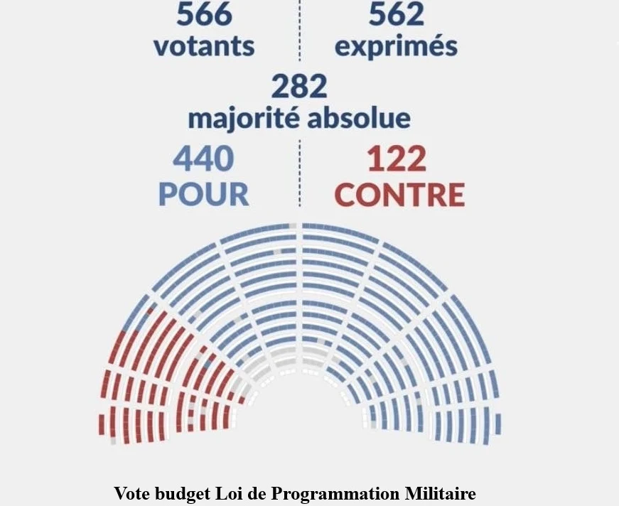

Prise de position
Le coût social des crédits supplémentaires pour l’économie de guerre
Date indiquée par Facebook · 25 mai 2026
Repères éditoriaux
La publication dénonce le vote de crédits militaires supplémentaires à l’Assemblée nationale. Elle met en regard les sommes annoncées et les besoins du pays en matière de services publics et de justice sociale. Nous défendons un autre choix, celui de la paix.
Texte conservé avec la publication
« Quand les riches se font la guerre, ce sont les pauvres qui meurent. » Citation de Jean-Paul Sartre
Cette semaine, l’Assemblée nationale, à l’exception des députés communistes, écologistes et insoumis, a voté 36 milliards de crédits supplémentaires pour la loi de programmation militaire de 2026 à 2030. Cela porte les dépenses militaires à 436.000.000.000 d’euros (436 milliards) à horizon 2030 ! Ainsi, la loi votée prévoit, au nom d’un « état d’alerte de sécurité nationale », la possibilité de déroger entre autres, au Code du travail… Ce sont toujours les peuples qui font les frais de ces logiques.
Alors que le gouvernement assèche les dépenses pour les services publics et refuse d’appliquer un impôt juste aux foyers les plus riches, il finance en masse l’industrie militaire et ceux qui en profitent…
Qui peut croire que l’on se sentira plus en sécurité demain avec ces dépenses colossales ?
Ce n’est pas la société que nous voulons, ce n’est pas la vision d’une société en paix que nous défendons.

Sources
Archive rouge · export Facebook · AR-0002-FB-00770
À lire aussi · Le PCF dénonce le rôle de l’OTAN